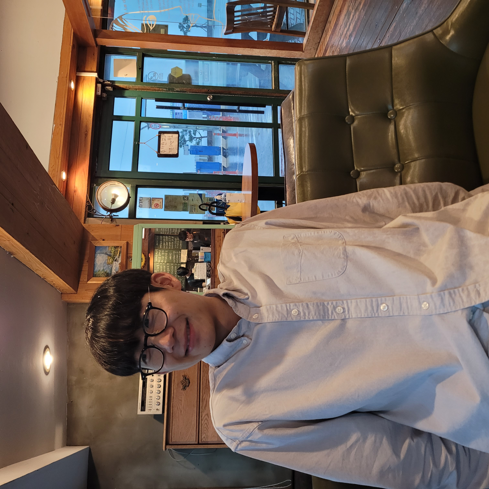

|
YeongGwang Son Hi there! I'm a PhD candidate at Robotics Innovatory, Sungkyunkwan University, South Korea, under the supervision of Prof.Hyouk Ryeol Choi My research is mainly focused on robotic grasping and manipulation. I'm interested in developing algorithms that enable robots to autonomously manipulate objects in unstructured environments and physically interact with their surroundings. |
 |
{kind=link}
Research |

|
Enhancing Antipodal Grasping Modalities in Complex Environments Through Learning and Analytical Fusion
Tat Hieu Bui, Yeong Gwang Son, Juyong Hong, Yong Hyeon Kim, Hyouk Ryeol Choi IEEE Transactions on Automation Science and Engineering (T-ASE), 2024 paper A deep learning and analytical-based method for generating antipodal grasping cadidates in highly cluttered scenes demonstrating high performance in terms of accuracy, generalization across various scenes and grippers, and rapid computation. |

|
Overcoming Heavy Clutter: Utilizing the Hybrid Grasping Network and Gripper
Seunghwan Um, Yeong Gwang Son, Tat Hieu Bui, Ho Sang Jung, Hyouk Ryeol Choi IROS Workshop: Benchmarking via Competitions in Robotic Grasping and Manipulation, 2024 ★Best Extended Abstract competition page / youtube / paper A robotic bin-picking system evaluated in the 9th Robotic Grasping and Manipulation Competition (RGMC) at ICRA 2024. |

|
Development of Adaptive Gripper Enhancing Power Grasp Range and Linearity
Issac Rhee, Chun Soo Kim, Heeyeon Jeong, Seung Jae Moon, Seunghwan Um, Yeong Gwang Son, Yong Bum Kim, Ho Sang Jung, Hyouk Ryeol Choi IEEE Access, 2024 paper Gripper design that applies a Grasshopper mechanism to improve fingertip movement. It also allows the fingertips to move towards the palm of the gripper after grasping an object, thereby expanding the range of object sizes that can be adaptively grasped. |

|
CoAS-Net: Context-Aware Suction Network with a Large-Scale Domain Randomized Synthetic Dataset
Yeong Gwang Son, Tat Hieu Bui, Juyong Hong, Yong Hyeon Kim, Seung Jae Moon, Chun Soo Kim, Issac Rhee, Hansol Kang, Hyouk Ryeol Choi IEEE Robotics and Automation Letters (RA-L), 2024 source code & dataset / paper Unknown object picking in cluttered bin-picking environment with a suction grasp detection neural network trained on a large-scale domain randomized synthetic dataset. |

|
Deep Learning Based 6-DoF Antipodal Grasp Planning From Point Cloud in Random Bin-Picking Task Using Single-View
Tat Hieu Bui, Yeong Gwang Son, Seung Jae Moon, Quang Huy Nguyen, Issac Rhee, Juyong Hong, Hyouk Ryeol Choi IEEE Robotics and Automation Letters (RA-L), 2023 paper An approach for grasping unknown objects in bin-bicking tasks using end-to-end method for 6-DoF antipodal grasps. |
|
Feel free to download this website's source code. Inspired by Jon Barron's website. |